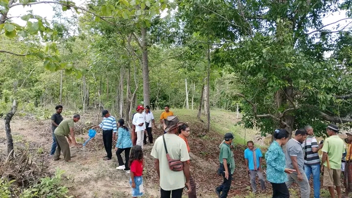
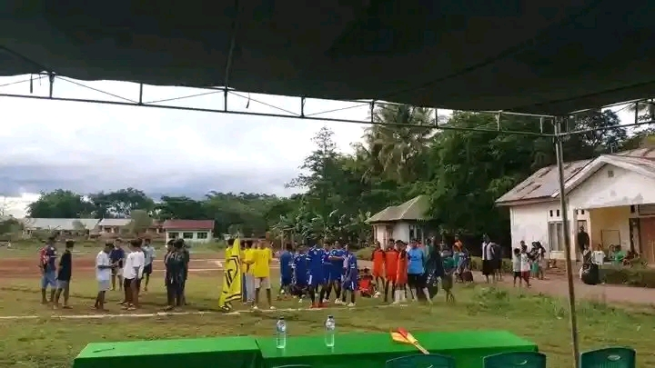

Website Resmi Desa Noebaun
Membangun Desa, Melayani Masyarakat
Membangun Desa, Melayani Masyarakat

Pemerintah Desa Noebaun mengundang seluruh masyarakat untuk menghadiri kegiatan rapat desa dalam rangka membahas program kerja, pembangunan desa, serta berbagai hal penting yang berkaitan dengan kepentingan masyarakat.
📅 Hari/Tanggal : Menyesuaikan
⏰ Waktu : Menyesuaikan
📍 Tempat : Kantor Desa Noebaun
Diharapkan kepada seluruh masyarakat Desa Noebaun agar dapat hadir dan berpartisipasi aktif demi kemajuan dan pembangunan desa bersama.

Dalam rangka menjaga kebersihan dan meningkatkan produktivitas kebun desa, Pemerintah Desa Noebaun mengajak seluruh masyarakat untuk bersama-sama mengikuti kegiatan kerja bakti di area kebun desa.
📅 Hari/Tanggal : Menyesuaikan
⏰ Waktu : Pagi Hari
📍 Lokasi : Kebun Desa Noebaun
Kegiatan ini bertujuan mempererat kebersamaan warga, menjaga lingkungan desa, serta mendukung pengembangan potensi kebun desa.
Mari bersama menjaga semangat gotong royong demi Desa Noebaun yang bersih, maju, dan sejahtera.